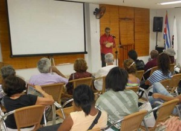

"Build together a space for poetry", that transcends the traditional spaces", thus summed up the poet Alex Pausides, director de la Southern collection y del Havana poetry festival, the national meeting of coordinators of this event that took place the 7 and 8 de noviembre en la sala Rubén Martínez Villena de la UNEAC.
Durante el intercambio de coordinadores a nivel nacional se conoció la convocatoria y programa del 17 Festival Internacional de Poesía de La Habana del próximo año –propuesto del 25 to the 31 de mayo–, se discutieron ideas para una acción poética nacional durante el evento, se revisaron las articulaciones con organizaciones e instituciones nacionales e internacionales y se informó del trabajo de la Network of poets in defense of humanity y del WPM.
Además se revisó el estado y las perspectivas de la Southern collection, el trabajo y promoción de los sitios web Palabradelmundo and CubaPoesía, entre otras actividades, en lo que se pudiera calificar como una gran acción poética nacional que estableció las bases del trabajo en lo adelante, fundamentalmente con vistas a las acciones a desarrollar en 2014.
“No es la primera vez que se organiza a nivel nacional, pero sí es la primera ocasión en que se hace tan global y orgánicamente establecida”, reafirmó Pausides, quien también es Vicepresidente de la Asociación de Escritores de la UNEAC.
Durante el encuentro se conformó un Comité de Coordinación para extender el Festival de Poesía a todo el país, con subsedes en cada provincia, y se discutieron las acciones a realizar en función del evento, con presentación de libros, lecturas de poemas, conciertos, materiales audiovisuales, promoción en las redes sociales de Internet, los medios de comunicación y todas las iniciativas que sean capaces de desarrollar.
La acción global hacia el interior
“Han quedado muy entusiasmados con la idea de que la Red de Poetas en Defensa de la Humanidad y por la Justicia Social se extienda hacia el interior del país, en que las representaciones provinciales del Festival of poetry se conviertan en promotores de la Red y del Movimiento Poético Mundial en cada localidad”, destacó Pausides.
In this sense, el poeta Alejandro González presentó la Declaración del Comité de Coordinación del Festival de Poesía de La Habana, en la que se reflejaron las intenciones de “multiplicar las intenciones del movimiento poético mundial y de la Red” para trabajar “de forma permanente, y no sólo para los días en que se desarrolle propiamente el Festival, para que Cuba toda sea una lectura constante de lirismo, solidaridad y creación.”
Esta ha sido la respuesta de los creadores cubanos ante la solicitud del Comité Coordinador del WPM, fundado hace 26 meses en Medellín, Colombia, y que ya incluye en su membresía a 122 Festivales de Poesía, 114 Proyectos Poéticos y 1256 Poets of 135 países del planeta.
Entre los objetivos de este Movimiento, al que se suman nuestros creadores, se encuentra “luchar por la dignidad de los pueblos a través de la dignidad que la poesía irradia en su proyección social, ahora cuando es urgente recuperar los dones del diálogo, la solidaridad y la coexistencia fundada en el intercambio simbólico que propicia la red de acciones poéticas a nivel global.”
Poesía en Movimiento y Premios Wolsan-CubaPoesía de 2013
El encuentro terminó en la tarde-noche del viernes con una lectura colectiva de un grupo de poetas que, además de ser coordinadores provinciales, han sido publicados por la Colección Sur, among them: José Ramón Sánchez, Guantánamo; Juventina Soler, of Bayamo; Alejandro González Bermúdez, de Camagüey; Isbel Gonzalez, de Sancti Spíritus; Ileana Alvarez, Ciego de Ávila; Otilio Carvajal, Santa Clara; Misael Acosta, sagebrush; y Rafael Jorge Carballosa, de la Isla de la Juventud.
También se aprovechó la ocasión para dar a conocer los Premios del Concurso Wolsan-CubaPoesía 2013. The jury, constituido por Basilia Papastametiu, Alex Pausides y Ricardo Alberto Pérez, decidió reconocer cinco cuadernos finalistas y otorgar menciones a Dog that howls, de Sergio García (Santa Clara); Invocations and other limits, Laura Sunday; and Something here breaks down, de Katherine Bisquet. In addition, se otorgó una primera mención a Dockers (21 lotes), of Yunier Riquenes (Santiago de Cuba), tomando en consideración “la capacidad de asumir sin tropiezos la complejidad de un mundo precario, que cobra inquietante intensidad a través de la memoria, depositando finalmente una sustancia ancestral en el lenguaje”.
The Wolsan-CubaPoesía award 2013 le fue otorgado a The great architect, Legna Rodriguez, de la que el jurado valoró que “las palabras alcanzan una presencia significativa que supera la monotonía, a la que gran parte de nuestra tradición nos ha venido acostumbrando, y porque el propio discurso demuele el más mínimo asomo de mediocridad e hipocresía”.
El premio es convocado desde hace tres años por el Festival Internacional de Poesía de La Habana, under the auspices of the Wolsan Foundation of South Korea and the Fundación Asia-iberoamerica de Bogotá. Además cuenta con el coauspicio de la Asociación Hermanos Saíz y las revistas El Caimán Barbudo y Amnios.
Concebido para poetas menores de 35 years, el Premio se ha propuesto promover en el ámbito continental la obra de los jóvenes poetas cubanos y, a pesar del poco tiempo que lleva, ha ganado en popularidad entre los creadores nóveles. Además del beneficio monetario, la obra ganadora es publicada en la siguiente Feria Internacional del Libro de la Habana y es promocionada en el Festival Internacional de Poesía de Medellín, además de formar parte de la plataforma profesional de promoción de la Colección Sur Editores.

Homenaje al Premio de la Crítica 2013
Junto a la presentación de los premios, la tarde-noche también fue el momento escogido para celebrar los 20 años de la Southern collection y el otorgamiento del Critic's award 2013 al libro Strawberry and Chocolate, of Senel Paz, que contiene el guión de la película homónima.
Tras la proyección del programa To read tomorrow –del Canal Educativo 2– dedicado a Senel Paz, el poeta Pedro López Cerviño destacó no es la primera vez que la Colección Sur recibe un Premio de la Crítica entre sus títulos, pero es un “hecho sin precedentes” que, “en un país donde no hay historia editorial en materia de guiones de cine”, se le haya otorgado este premio a tal modalidad.
Sin dudas es un premio merecido pues, a decir de Cerviño, “este libro pone en manos del lector la posibilidad de recrear, esta vez sin los artilugios tecnológicos del celuloide, una de las más bellas historias humanas de todos los tiempos. Una historia que hizo y hace época, no sólo entre los que vivimos en esta convulsa y amada nación”.
Se destacó además el papel que ha jugado la Colección Sur, que en sus 20 años de vida suma ya más de 200 libros presentados. “Su vocación –dijo Cerviño– es llenar vacíos, publicar lo impublicado o, at least, de lo mejor lo menos conocido por el lector cubano”, para lo cual ya la editorial tiene un catálogo con escritores de Israel, Persia, Corea del Sur, Palestine, Russia, Africa, Viet Nam, United States, el Caribe y América Latina.
En un performance, que coronó los dos días de trabajo para el futuro de la poesía, que fue digno de alguno de sus personajes de cine, Senel Paz retribuyó el homenaje con un simple: “Muchas gracias”.
By: Camilo García Lopez-trigo